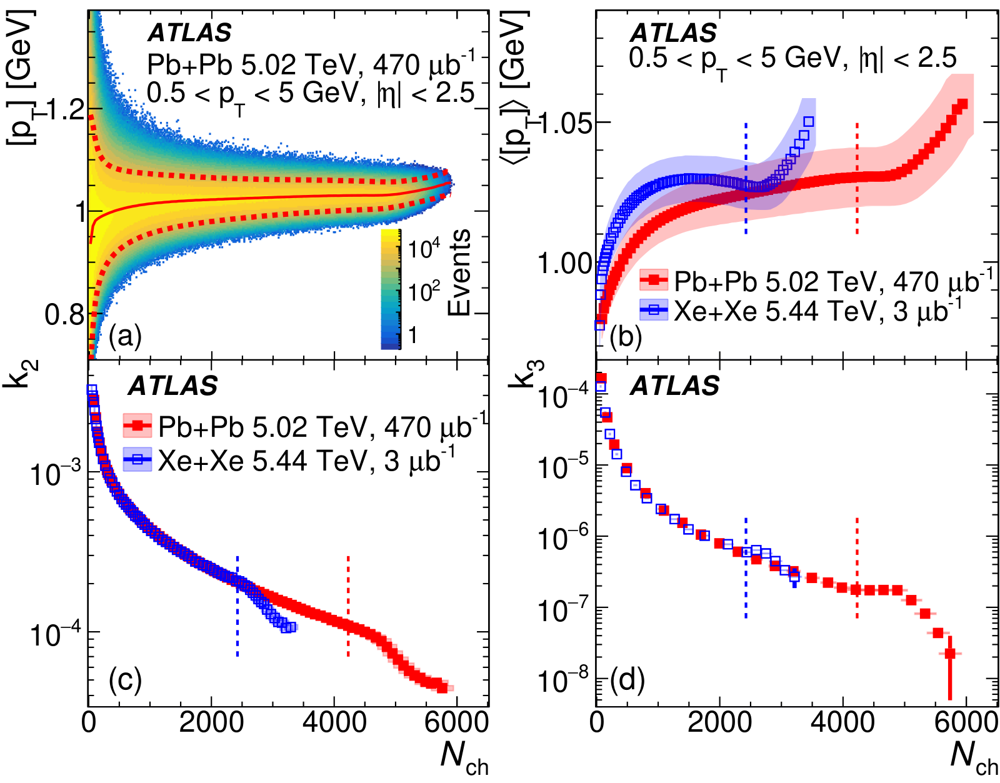
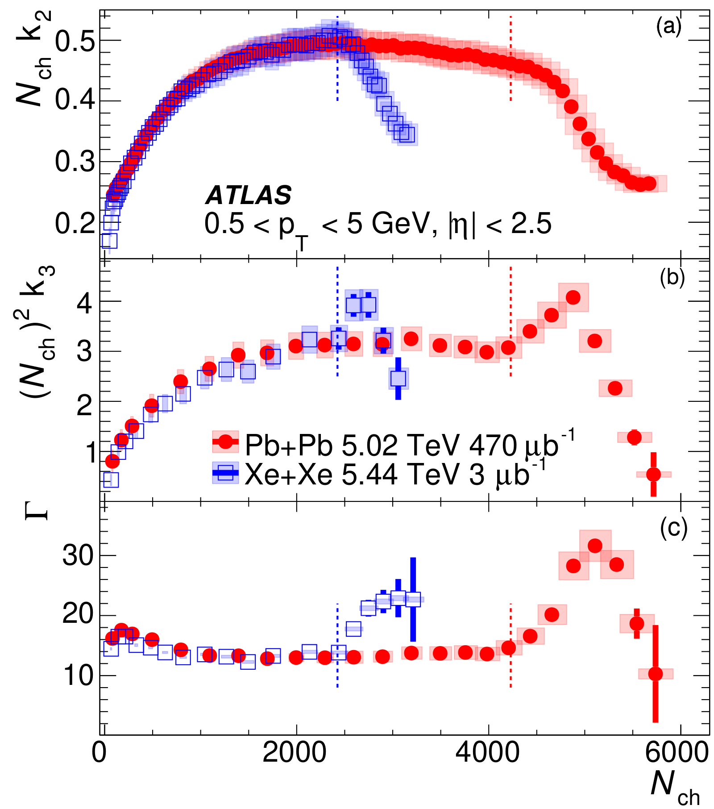
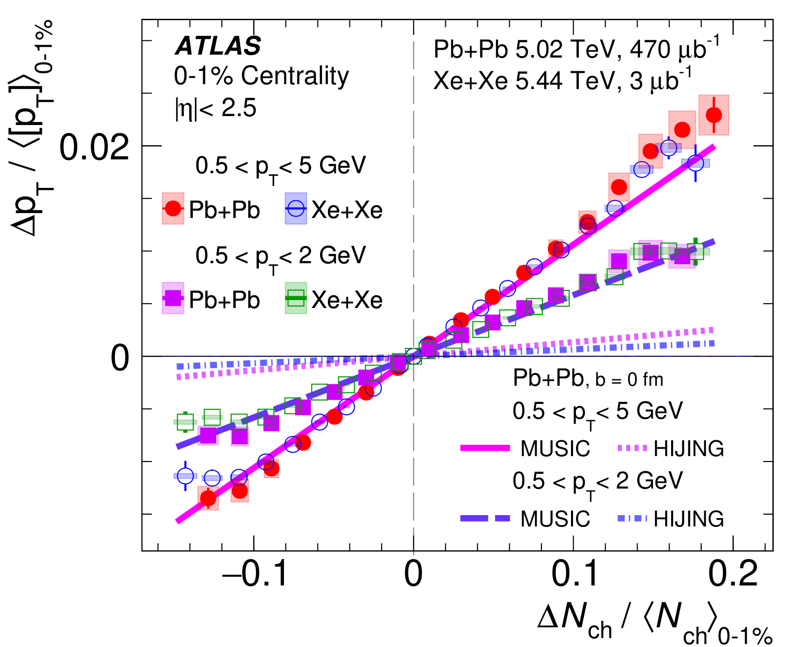

The average particle momentum, [pT], changes from one collision to the next for two reasons: the size of the plasma droplet varies (geometrical), and so does everything else at fixed size (intrinsic). In the most head-on collisions the size stops varying. By measuring how [pT] fluctuations change there, we made the first attempt to separate the two sources.
1The gap: two sources, one mixed signal
Each collision makes a tiny droplet of quark-gluon plasma that explodes outward. How hard it pushes sets the average transverse momentum of its particles, [pT]. A smaller droplet is denser and pushes harder, so the droplet's size is one reason [pT] varies between events. Fluctuations in nucleon positions, energy deposition and temperature at fixed size are another.
What you're seeing: on the left only the droplet's size changes; when it shrinks, [pT] goes up. On the right the size is fixed but the amount of matter packed in changes, and [pT] follows it. Earlier measurements always saw both effects mixed together.
Why it matters: the intrinsic part carries information about the plasma itself, such as its speed of sound, but it was buried under the geometrical part.
2What we measure: the shape of the [pT] distribution
For each event we compute [pT] from all charged particles (0.5–5 GeV). Collecting millions of events gives a distribution of [pT]. We measure its mean, its variance (width) and its skewness (how lopsided it is), as a function of the number of charged particles, Nch.
What you're seeing: a made-up [pT] distribution filling up one event at a time. The vertical line marks the mean, the arrows the width. The dashed curve is a symmetric bell curve of the same width; positive skewness means a longer tail to high [pT].
If a collision were just many independent sources added together, the variance would fall as 1/Nch and the skewness as 1/Nch2. Deviations from this simple scaling are the signal. We compare Pb+Pb (5.02 TeV) with the smaller Xe+Xe system (5.44 TeV).
3What we observe: a sharp change in the most central collisions
In the most head-on (ultra-central) collisions, the impact parameter b approaches zero and the overlap reaches its largest possible size. Larger sizes are no longer available, so the geometrical fluctuations are squeezed out.
What you're seeing (schematic): left, the two nuclei for events in one multiplicity class; right, how often each overlap size occurs. As b is forced toward 0, the size distribution piles up against the maximum and then collapses, so the geometrical width shrinks to zero while its lopsidedness first grows and then vanishes.

Fig. 1 of the paper. (a) [pT] versus Nch for millions of Pb+Pb events. (b–d) The mean, variance k2 and skewness k3. Right of the dashed lines (top 5% of events), all three break away from their smooth trends: the mean rises, the variance and skewness drop.
Figure: ATLAS Collaboration, PRL 133, 252301 (2024), arXiv:2407.06413, CC BY 4.0.

Fig. 2 of the paper. Multiplying out the expected scaling makes the deviations stand out. In ultra-central collisions the variance (a) falls sharply, while the skewness (b, c) first jumps up and then drops: the pattern expected when the largest sizes are cut off.
Figure: ATLAS Collaboration, PRL 133, 252301 (2024), arXiv:2407.06413, CC BY 4.0.Fig. 3 of the paper. All quantities scaled to their values at the 5% centrality point. The variance (b) drops by about half. A model (green) describes the mean and variance; its geometrical part (dashed) accounts for most of the changes. The data show more skewness than the model, and Xe+Xe shows slightly weaker effects than Pb+Pb.
Figure: ATLAS Collaboration, PRL 133, 252301 (2024), arXiv:2407.06413, CC BY 4.0.
4What we conclude: geometry can be switched off, and the rest measures the plasma
The ultra-central features match what is expected when the overlap size reaches its maximum and the geometrical fluctuations are suppressed. This gives a new way to separate geometrical from intrinsic fluctuations.
With the size fixed, events with more particles have a denser, hotter plasma, which pushes harder and gives a higher [pT]. The slope of this rise is tied to the plasma's speed of sound.
What you're seeing (schematic): a droplet of fixed size holds more or fewer particles. More particles mean a hotter fluid that pushes harder, so the event moves up along the line on the right. The steepness of that line is proportional to the speed of sound squared, cs2.

Fig. 4 of the paper. In the 0–1% most central events, [pT] rises linearly with Nch, with similar slopes in Pb+Pb and Xe+Xe. HIJING, a model with no fluid, misses the slope badly; the hydrodynamic model MUSIC with cs2 ≈ 0.23 at Teff ≈ 222 MeV reproduces it in both pT ranges.
Figure: ATLAS Collaboration, PRL 133, 252301 (2024), arXiv:2407.06413, CC BY 4.0.
A caveat: the extracted speed of sound depends on which particles define centrality and [pT]. Since the slope comes from the intrinsic fluctuations, a model should describe the slope and the variance and skewness together.
5What comes next
Smaller systems: the ultra-central effects are slightly weaker in Xe+Xe than in Pb+Pb; O+O, p+Pb and pp collisions can map how they depend on system size.
Speed of sound, done carefully: study how the fluctuations decorrelate along the beam direction, which may explain why the extracted cs2 depends on rapidity selection.
Collision energy: follow the geometrical and intrinsic parts across beam energies, for example at RHIC.
What you're seeing: a head-on collision of two oxygen-16 nuclei. Only a few dozen nucleons take part, so the droplet is tiny. How its geometrical and intrinsic fluctuations compare is an open question.
Cite this work: ATLAS Collaboration, "Disentangling sources of momentum fluctuations in Xe+Xe and Pb+Pb collisions with the ATLAS detector", Phys. Rev. Lett. 133, 252301 (2024), doi:10.1103/PhysRevLett.133.252301, arXiv:2407.06413.
All plots on this page are reproduced from that paper under CC BY 4.0. Animations are simplified illustrations made for this page, not results of the paper.